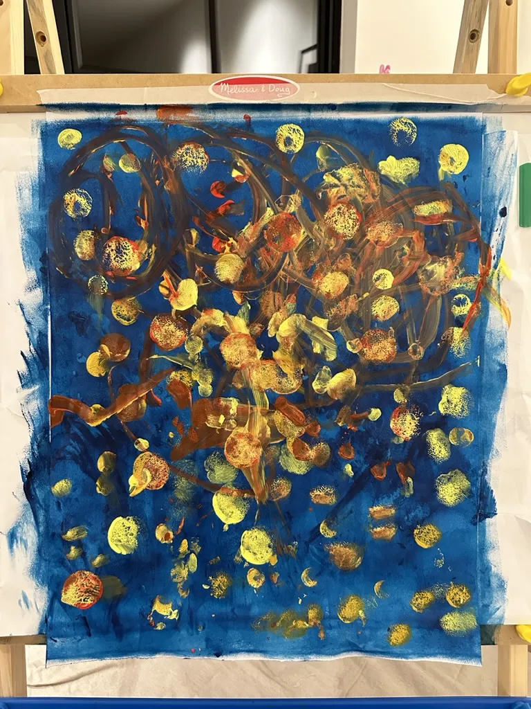
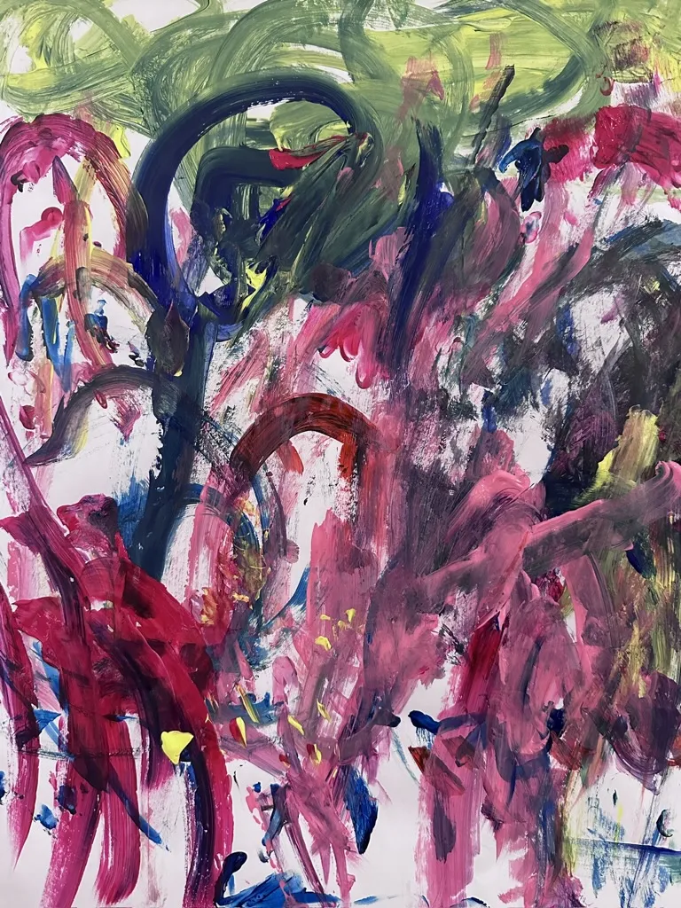

Carlynn Wu was born on September 10, 2021, the beloved first child of Cindy and Peter. From her earliest days she was full of light — quick to laugh, quick to wonder, and quick to love. In five short years she became the brightest part of every room she entered.
Chasing the light
A Born Artist
More than anything, Carlynn loved to make things. Give her a brush, some paint, and a fresh sheet of paper and she would disappear happily into a world of her own. Color was her language long before words were, and she spoke it fluently.
At the easel, with Mama
Her paintings hang in our home like little windows into the way she saw everything — bright, bold, and unafraid.


Everyday Adventures
Carlynn met the world with wide-open curiosity. She loved being outside — playgrounds and hiking trails, wildflowers and wide horizons, and every small wonder she could find along the way. Wherever her family went, she went too, usually a few happy steps ahead.
Her Family
In her last year, Carlynn became a big sister to baby Leonardo — a role she took to with gentle, fierce pride. She was endlessly loved by her parents, Cindy and Peter, and she loved them back with her whole heart.
Held close
Always Our Girl
Five years was not nearly enough. But every one of those years was a gift, and every painting, every laugh, and every small wonder she left behind is a part of her we get to keep.